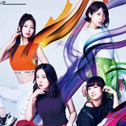

Here's a List of All the Anime Impacted by COVID-19 (Updated)
With all the anime postponements announced as a result of the COVID-19 pandemic, it can be tough to keep track of it all. Read on for a regularly updated list of movies, TV anime, and events impacted by the issue.
Voice Actress Unit Sphere Opens Their Official YouTube Channel

They have also joined the circle of voice actors interacting directly with fans on YouTube. The four-member voice actress unit Sphere, consisting of Haruka Tomatsu, Minako Kotobuki, Ayahi Takagaki, and Aki Toyosaki.
Tower of God's Director Reveals What it Was Like Bringing the WEBTOON Series to Life
Tower of God is one of this season's biggest hits and we got to interview the director! Read about Takashi Sano's experiences working in the anime industry, Clint Eastwood's influence on his work, and what he would wish for at the top of the tower.
How Gon vs Hisoka Changes The Meaning Of Strength In Hunter X Hunter
Hunter x Hunter is a nearly perfect show, taking battle anime to places that audiences had never seen before. And one of those fights — Gon vs Hisoka — is especially important when it comes to playing with our expectations of contests between antagonists and underdogs. Hit the jump to find out why it's so special and vote for next week's fight!